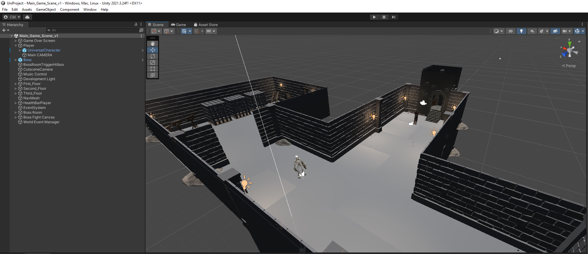

Last Updated May 6th, 2023
My Dissertation for BSc Games Programming was a Research & Development project that saw me develop a third person dungeon crawling game with a focus on AI. This project had influence from the Dark Souls video game Series. This file is too large to upload to GitHub so I have instead included the report created during the development process. This game files can be sent upon request.

Java, Mathematics, Graphics Programming
In these projects a number of portfolio tasks were completed that my showcase mathematics, graphics programming, and procedural modelling skills. NetBeans IDE was used for this project using Java 2D and 3D. One of the projects includes a 3D animation of our solar system
Drawing initial designs for a character that would then be created in Blender, Rigged in Unity, and added to an game enviroment to be used as the character model for the player. In this project there is also some level design examples such as the castle that can be seen in the report which I made from scratch using a Library in Unity.
Here you can see some examples of projects I have completed in Unity which includes a User Guide I created for new Users of Unity, an enviroment/level design of a blacksmiths workshop, a character controller coded from scratch as well as collision detection, playerMovement and PlayerLook scripts
Whilst working with a group of my classmates we created a small development team (ARCS Interactive), we created an FPS Puzzle game, "Principia". The game has a gravity mechanic inspired by the Portal Series in which players would have to change the gravity direction using a gravity gun in order to escape from one room to the next.